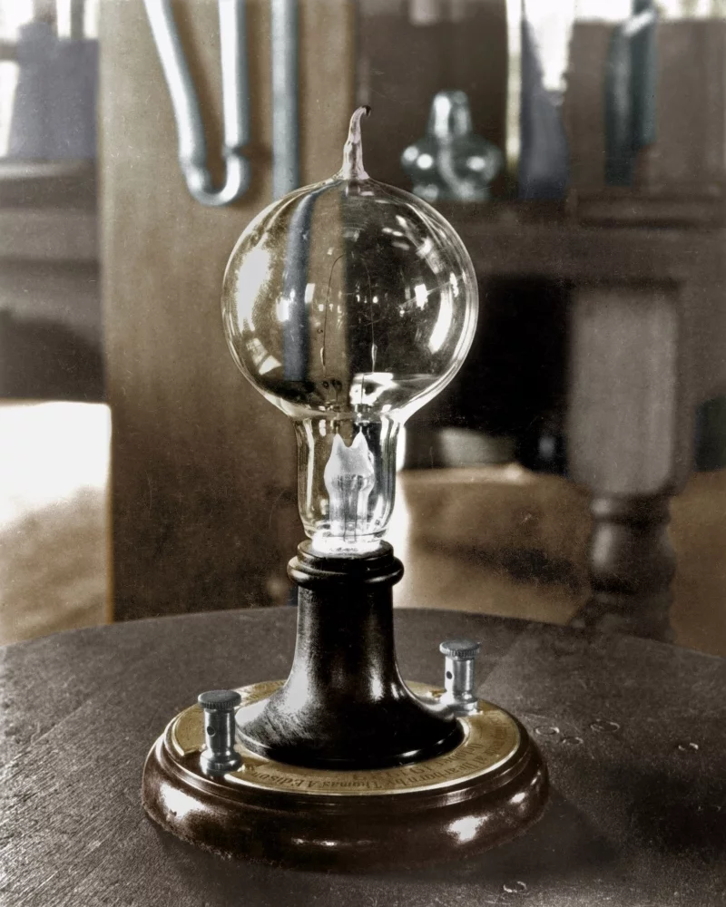
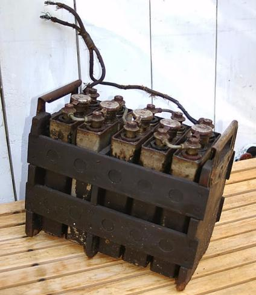

Invenciones
El trabajo de Thomas Alva Edison abarcó una amplia gama de áreas, desde la iluminación y la grabación de sonido hasta la cinematografía y las baterías, y su legado en el campo de la innovación y la tecnología sigue siendo relevante hoy en día.Fonógrafo (1877)
El fonógrafo fue uno de los inventos más importantes de Edison. Permitía grabar y reproducir sonidos, sentando las bases para la industria discográfica y la grabación de audio..jfif "Fonógrafo")
Bombilla incandescente (1879)
Edison desarrolló una bombilla eléctrica práctica y duradera. Su diseño utilizaba un filamento de carbono que prolongaba significativamente la vida útil de la bombilla.

Sistema de distribución eléctrica (1880)
Edison diseñó un sistema de distribución eléctrica que permitía llevar la electricidad a los hogares y las ciudades. Esto fue fundamental para la electrificación generalizada.Cámara de cine (1891)
Edison patentó una cámara de cine y un proyector, sentando las bases para la industria cinematográfica. Sus innovaciones contribuyeron al desarrollo del cine y la grabación de movimiento.Batería alcalina (1901)
Edison desarrolló una batería alcalina mejorada que tenía una vida útil más larga y era más eficiente que las baterías existentes. Su invención tuvo aplicaciones en diversas industrias.
